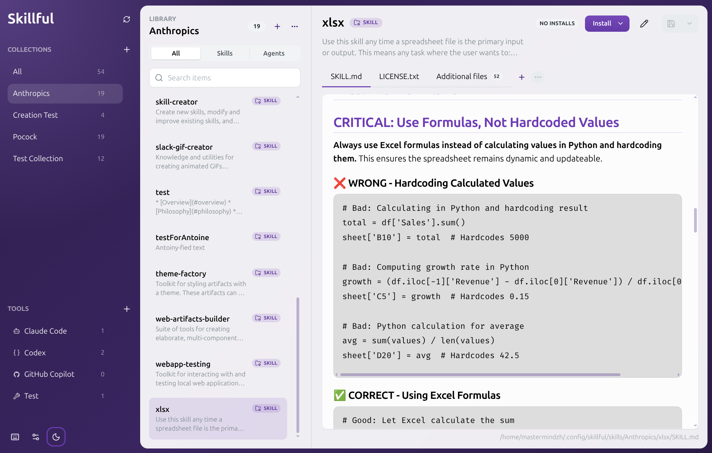
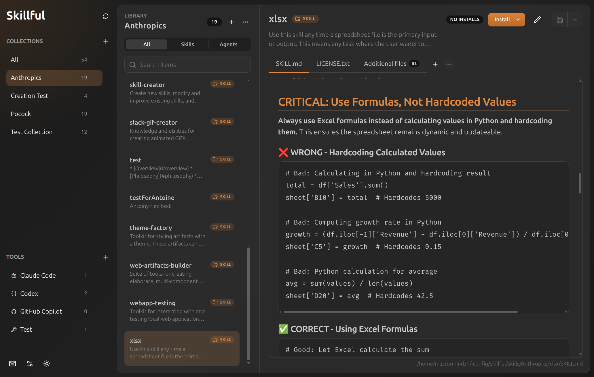

One source, every tool.
Install the same skill or agent into Claude Code, Codex, Cursor, Copilot, Gemini, Junie, opencode, or any folder-based destination. No copies, no drift.
Skillful turns prompts, agents, screenshots, scripts, and notes into a filesystem library you can inspect and maintain. Edit folders directly, preview markdown, import public skill repos, and install the same item into every AI tool that needs it.


Install the same skill or agent into Claude Code, Codex, Cursor, Copilot, Gemini, Junie, opencode, or any folder-based destination. No copies, no drift.
Prompts, screenshots, scripts, and supporting notes live next to the skill that uses them.
Keep `SKILL.md` and `AGENT.md` workflows in one library, with filters and badges that make the difference clear without splitting your workspace.
Spot broken symlinks, repair them in a click, and remove cleanly when a skill has outlived its use.
Before & after
~/notes/, ~/dotfiles/, and four Obsidian vaults.
Skillful is source-available and free. Your skills, agents, and notes stay on your machine: no account, no telemetry, no servers. You own the folder, and if Skillful ever disappears your library still works, because it's all local.
FAQ
Yes. The source is available under the Functional Source License 1.1 with an MIT future license. Personal, internal, education, research, and professional-services use are allowed; competing commercial products or services are not.
No. Everything stays on your local filesystem. Skillful has no backend and no analytics. The only outbound traffic is to GitHub: update checks against the release feed, and the source archives you explicitly choose to import. See the Privacy section for the full list.
Skillful ships one-click installers for Claude Code, Codex, Cursor, GitHub Copilot, Gemini CLI, Junie, and opencode. You can also add your own custom install targets: point Skillful at any folder on disk and it'll treat it like the built-in ones. As many as you like, per skill or per collection.
Skillful publishes Windows, macOS, and Linux builds on GitHub Releases. Linux releases include AppImage, deb, rpm, pacman, Snap, and Flatpak artifacts so you can pick the install style that matches your system.
Yes. Skillful supports direct import links, so a repository README can open the app with a GitHub repository already filled into the import dialog. That makes public skill libraries much easier to try without copying URLs around by hand.
Check out the generator to create your own.
However you already back up files. Your library is just a folder, so
git init and push it to a private repo, sync it with your usual
backup tool, or drag a copy onto a USB drive. There's nothing proprietary to
export and nothing to migrate when you switch machines.
Privacy
Skillful is local-first. There is no Skillful account, no Skillful server, and no analytics or telemetry of any kind. The app makes a small, predictable set of outbound network requests, all of them to GitHub, all of them only when you ask for them or to keep the app up to date:
github.com/Mastermindzh/skillful/releases for new versions when you
open the Updates tab or on launch. No identifying information is sent beyond
what GitHub already logs for any HTTPS request.
codeload.github.com. Nothing is uploaded.
skillful://import?... link
only prefills the import dialog locally. No request is made until you click
Import.
That's the entire list. Your skill folders, drafts, settings, and library paths never leave your disk. You can verify this by reading the source or by watching network traffic with your tool of choice.
Download Skillful, point it at your library, and stop maintaining the same workflow in five places.